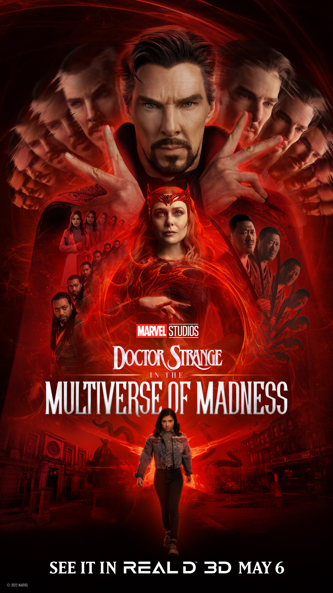

El regreso del director Sam Reimi conocido por su participación
en la trilogía original de SpiderMan ha causado una enorme emoción en los fanáticos de Marvel y del
super heroe Aracnido.
Esta segunda parte de la pelicula del doctor Strange nos ubica despues de los sucesos
de la pelicula Spider Man No Way Home. Tiene un buen inicio introduciendonos a travez de un sueño a la que será
coprotagonista, America Chavez. En lo cual nuestro protagonista despierta asustado por el sueño que tuvo.
Algo de lo más reprochable a la pelicula es la información que hay que tener para entender la situación, ya que como todos sabemos
debemos de haber visto WandaVision y What If para poder entender la trama, series que solo están disponibles a travez de la plataforma disneyPlus.
Todo lo cual no sería un problema para quien consume vorazmente todo lo que produce Marvel Studios (y ese es el objetivo, después de todo).
Pero estoy seguro que, a muchos, entre los que me cuento, les hará ruido cómo se maneja la caracterización de algunos personajes que se desdibujan por necesidad de la trama.
Es interesante en ese sentido que el imperio fílmico de Kevin Feige se ha llegado a parecer tanto a las historietas, que hasta ha copiado sus problemas.
Por suerte, una vez que las formalidades están cumplidas, la película encuentra su ritmo hasta el final. Y no teman, esta es definitivamente una de Sam Raimi.
Todo el arsenal de recursos del cine B que volcó en sus Spider-Man están aquí de vuelta, y esta vez, también trajo consigo bastante sangre. Esta es, sin duda,
la entrega más gore del MCU a la fecha.
De hecho, su segundo acto funciona en lo más básico como una de terror, cosa que no es usual en el MCU pero que si
es un clásico del director y que le va como anillo al dedo para desarrollar al antagonista principal.
Una de las cosas que más anhelaban los fans eran los famosos crossovers
, cosa que la pelicula de Spider Man comenzó en el Universo Cinematografico de Marvel, aunque no se dió la cantidad de cameos que los fans esperaban se puede decir que los que se
elaboraron valieron la pena, ejemplo de esto la adición de Black Bolt y Reed Richards de los cuatro fanáticos.
Otro greatest hit de Marvel Studios es el casting,
y acá no falla tampoco. Benedict Cumberbacht, Rachel McAdams y compañía están bien como siempre, pero es la introducción de América Chavez la que destaca. Si bien Xochitl Gomez tiene poca experiencia, le alcanza para demostrar
que tiene carisma y con que crecer si le dan más espacio. El potencial crossover Young Avergers cada vez parece un mejor prospecto. Espero que, cuando les toque el turno, les abran pista en la pantalla grande.
Para finalizar la pelicula es buena pero tiene un poco de fallos argumentales y en cierto punto se siente apresurado e ilogico, como que America pasa de controlar sus poderes por un simple "Tú puedes"
, pero al fin y al cabo es disfrutable, recomendada si se quiere pasar el rato, mi calificación 8/10.
Inicio/Reseñas
Crítica Doctor Strange in the Multiverse of Madness

Pelicula: Doctor Strange in the Multiverse of Madness
Fecha de estreno: 6 de mayo de 2022 (Estados Unidos)
Director: Sam Raimi
Productor: Kevin Feige
Escrita por: Michael Waldron
Duración: 126 minutos
Presupuesto: $200 millones
Distribuido por: Walt Disney Studios Motion Pictures
Sipnopsis: Doctor Strange regresa una vez más a la pantalla grande, en la que, aunque no lo parezca, es su segunda película en solitario. Quizás de manera inevitable si tenemos en cuenta cuan profundo estamos ya metidos en el MCU, comenzar a ver Doctor Strange in the Multiverse of Madness se siente como...